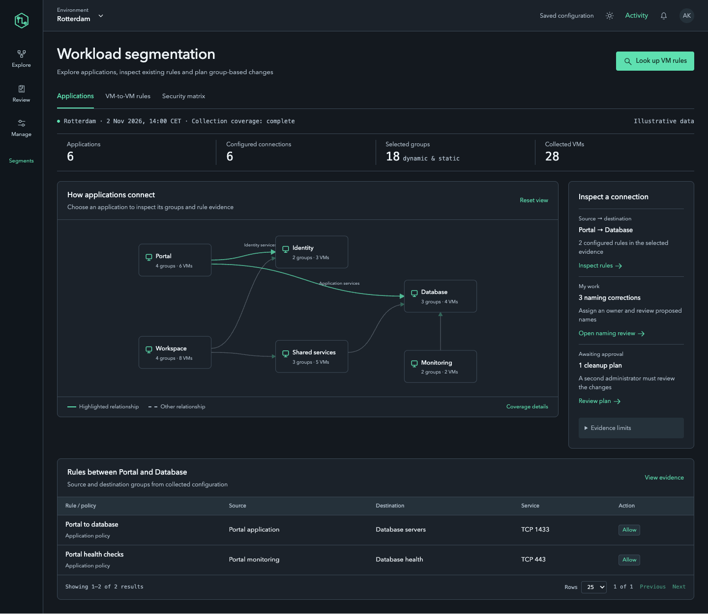
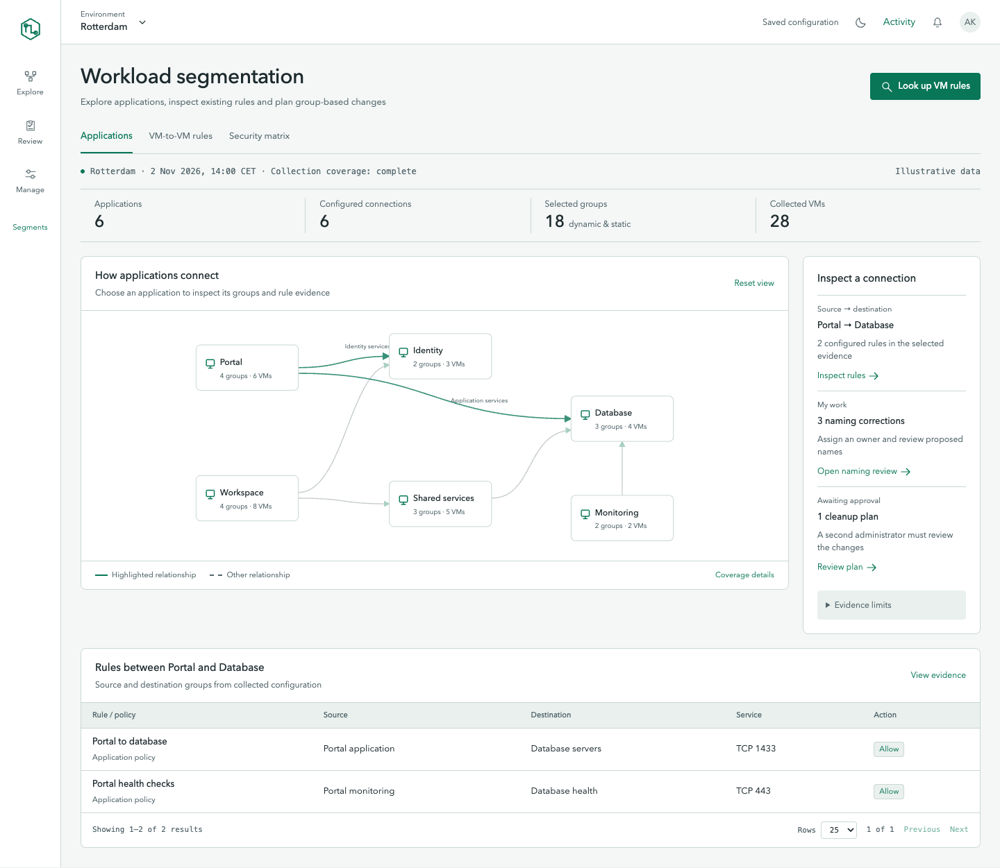
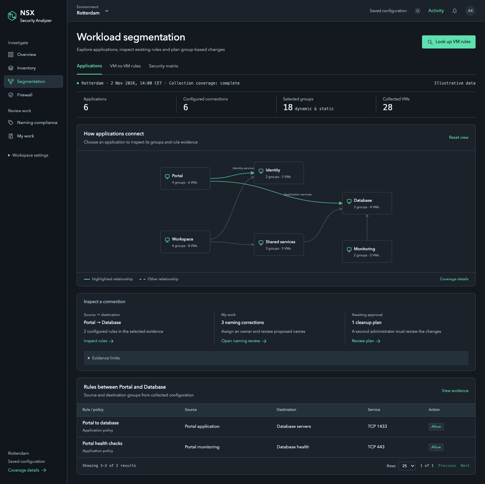
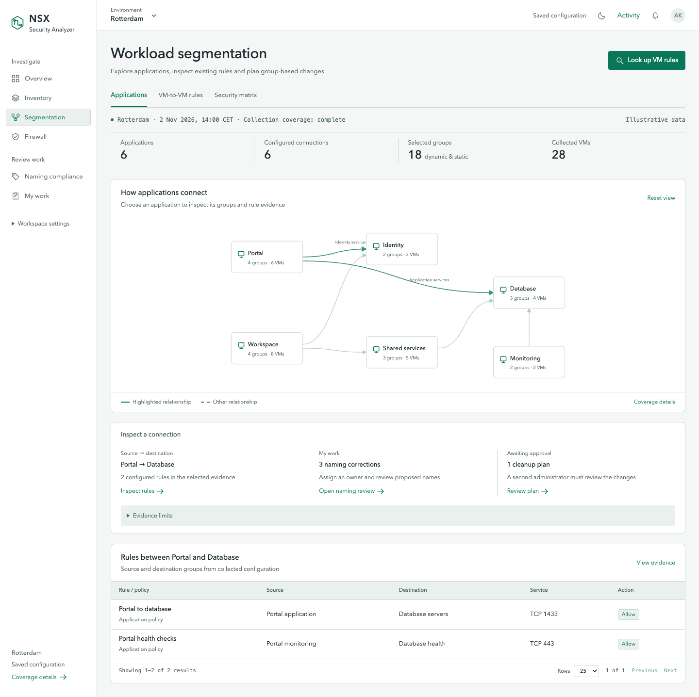
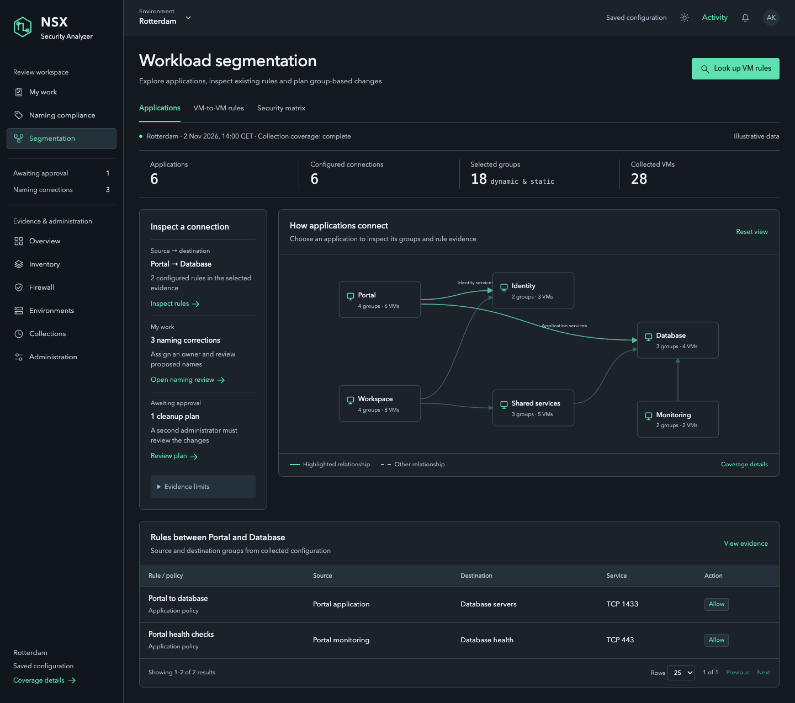
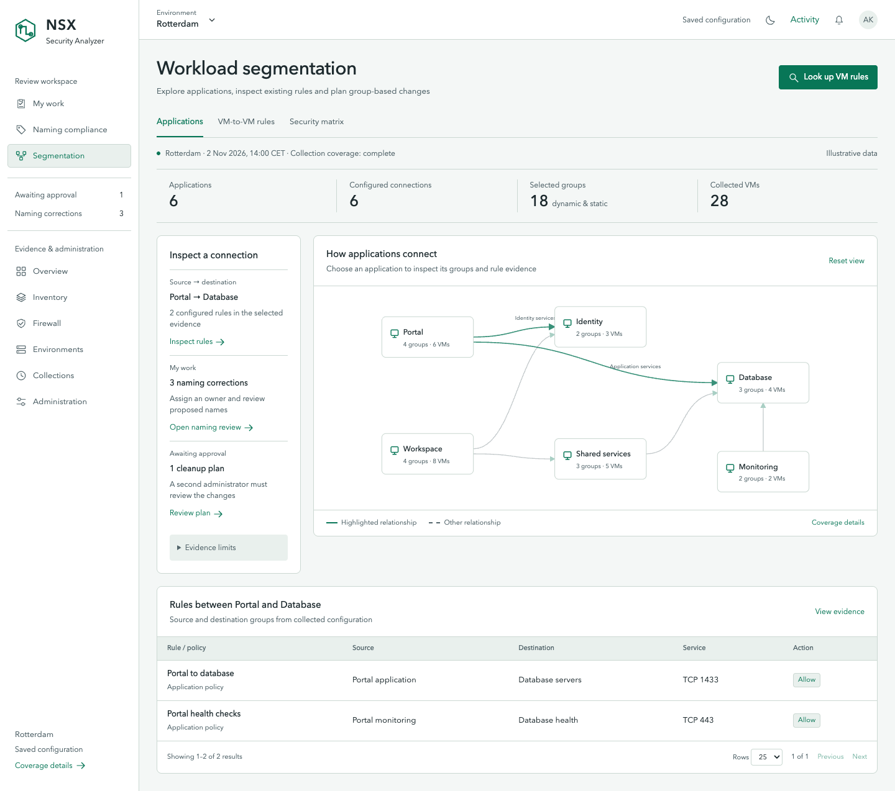
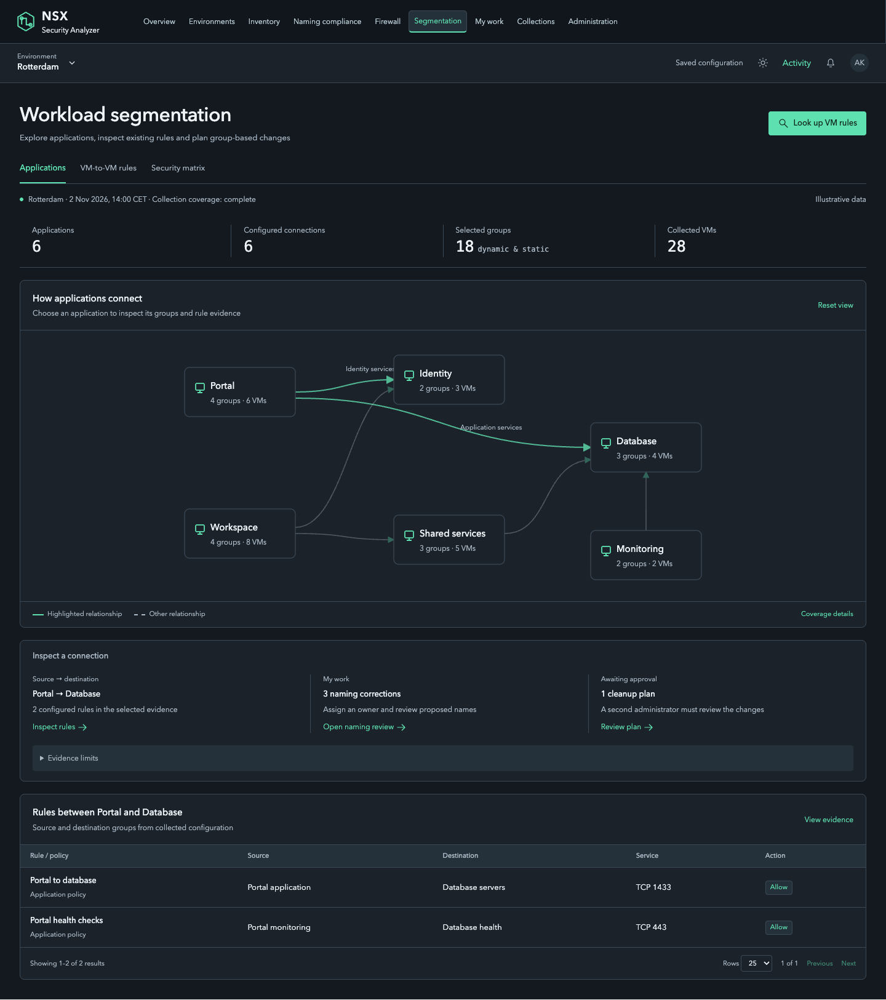
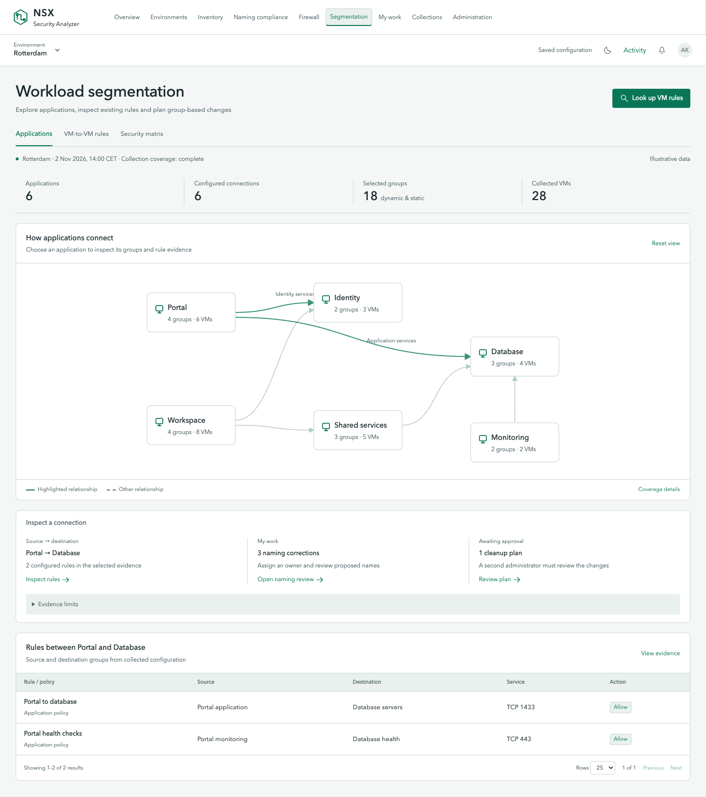
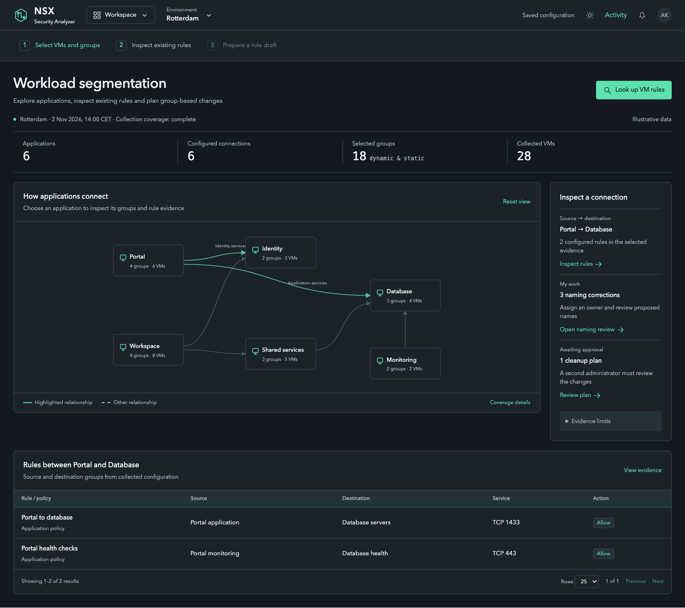
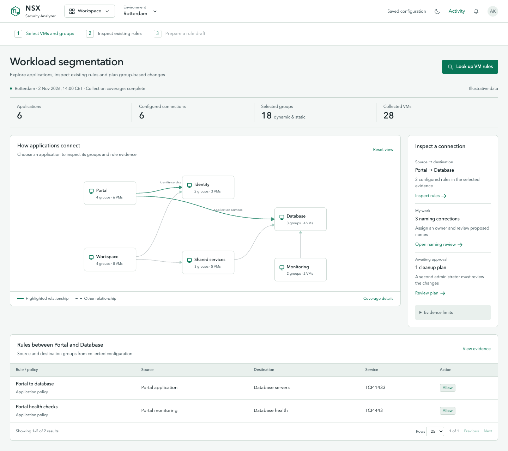

16. Section flyouts
A short category rail opens labeled navigation flyouts.

Dark mode · Same menu, same evidence
Light mode · Same menu, same evidenceRelay identity · Five menu alternatives, each in dark and light mode · Interactive chooser · Compare any two
A short category rail opens labeled navigation flyouts.

Dark mode · Same menu, same evidence
Light mode · Same menu, same evidenceA compact task menu, full-width map and evidence strip below.

Dark mode · Same menu, same evidence
Light mode · Same menu, same evidenceReview destinations lead the sidebar; context appears beside evidence.

Dark mode · Same menu, same evidence
Light mode · Same menu, same evidenceA slim module strip and expansive map with evidence beneath it.

Dark mode · Same menu, same evidence
Light mode · Same menu, same evidenceA module menu plus an explicit select, inspect and plan sequence.

Dark mode · Same menu, same evidence
Light mode · Same menu, same evidence